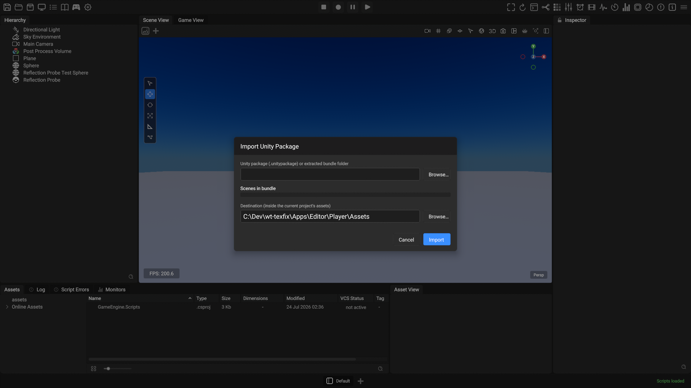
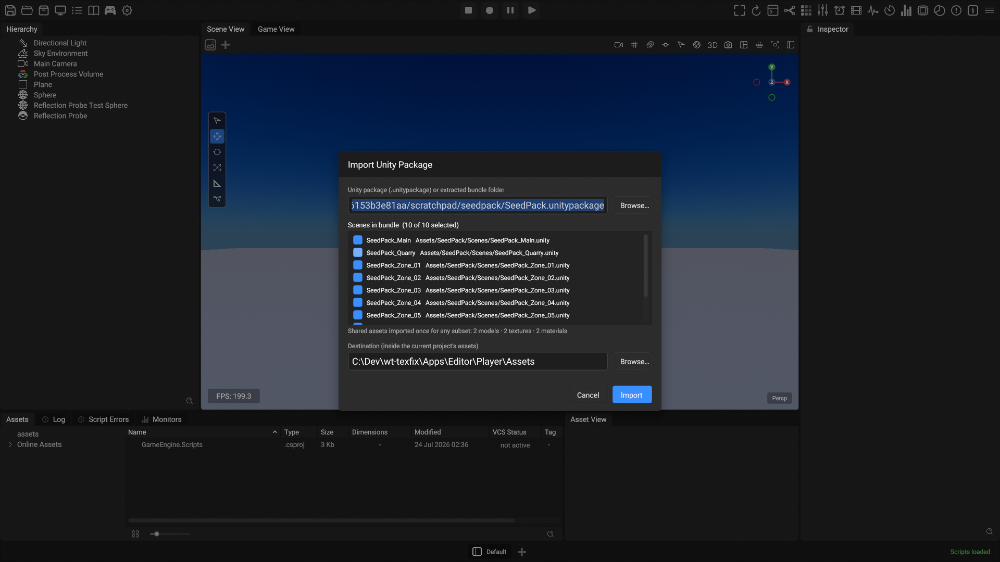
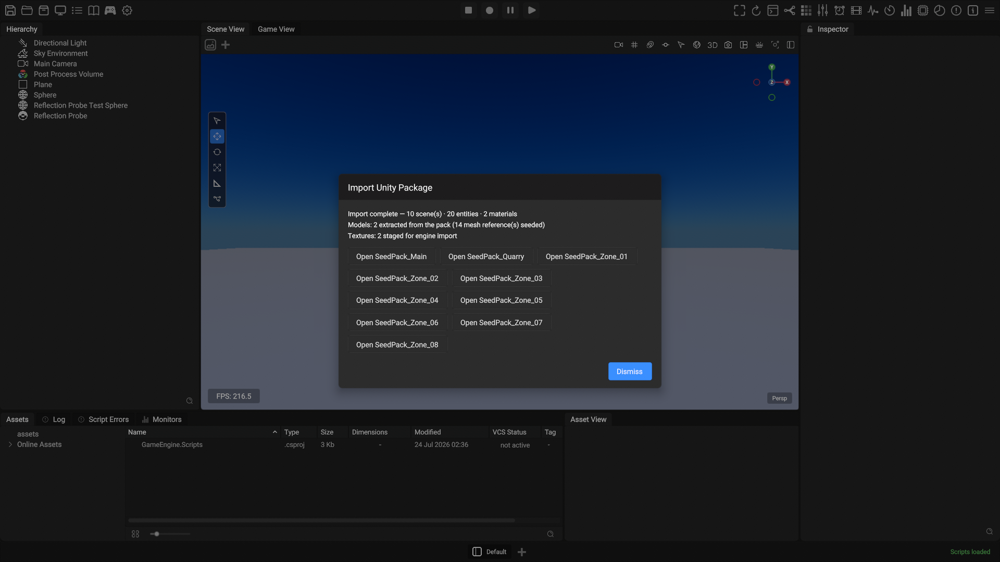

USER GUIDE · 2026-07-24 · Unity import pipeline — editor modal · standalone CLI · package manager
This guide covers the three ways Unity content and engine extensions enter a project: the in-editor Import Unity Package modal, the standalone OpenEngine-Unity-Scene-Converter CLI it wraps, and the engine's Package Manager for adding packages to a project.
The modal converts a Unity scene bundle — a raw .unitypackage (e.g. a Synty
pack) or an already-extracted bundle folder — into engine assets inside the currently
open project: text .scene files, StandardPBR
.material assets, the pack's FBX models, its source textures, and (where the
pack uses them) project-side water/waterfall surface shaders.
Models_Unity/, and
textures stage as source images the engine compiles on import. A fresh, empty
project imports a full pack in one pass.The entry lives in the native menu bar's Tools menu.

Assets folder.Browse… opens the native file dialog filtered to
*.unitypackage. To import from an extracted bundle folder instead
(the output of tar -xzf pack.unitypackage), paste or type the folder path
into the field and press Enter — committing the field loads the
bundle. The file dialog selects files only, so folder bundles are entered by path.
Either way, the modal scans the bundle in the background and fills in the
scene list. Raw .unitypackage files are extracted automatically; very large
packs (> ~4 GB extracted) should be pre-extracted and pointed at as a folder.
Every .unity scene in the bundle appears as a checkbox row (name + pack
path), all selected by default. The header counts your selection —
"Scenes in bundle (2 of 2 selected)" — and the line underneath summarizes the
shared asset pool: models, textures and materials are converted once
no matter how many scenes you tick, and each scene converts exactly as it would in a
single-scene run.

Defaults to the open project's Assets/ folder. Edit the field or
Browse… to pick a subfolder. Outputs preserve the converter's relative
layout under the destination — Materials_Unity/,
Textures_Unity/, Models_Unity/ (pack FBX extracted for meshes
your project didn't already have), and one <Scene>_unity.scene per
selected scene — so the scenes' relative references resolve in place.
Hit Import. The modal validates first (converter available, bundle picked, at least one scene selected — problems show as an inline warning, nothing runs). A progress bar tracks each conversion phase — phase · detail — step / total — with a live "textures: N staged · models: M extracted from pack…" line below it as shared assets stream in.
Conversion is staged safely before anything touches your Assets folder — the project never sees half-written files. Textures stage as source images; the engine's native import compiles them (mips + block compression into the project's derived cache) once they land in Assets.
Before anything moves, every output path is checked against the destination. If files would be replaced, a native dialog lists them (first 12 by name, then a count) and asks Overwrite / Cancel — Cancel is the default, and choosing it returns you to the config screen with nothing written. Re-importing the same pack to the same destination will trigger this; it's the expected refresh path.
The outputs move into the destination and the summary appears: scene / entity / material counts, a "Models: N extracted from the pack (M mesh reference(s) seeded)" line when the pack supplied meshes your project lacked, texture staging counts, a line for unresolved mesh references only if the pack itself doesn't contain the mesh, and a "Didn't carry over:" report listing anything in the source that couldn't be converted — you always know exactly what to revisit by hand.
Each imported scene gets an Open <Scene> button — held back behind a brief "Registering imported assets with the project…" note until the freshly moved files are registered, so an opened scene's references resolve immediately. Nothing auto-opens — opening a scene is always your click. Dismiss closes the modal and leaves your current scene untouched.

flowchart LR
A["Bundle\n.unitypackage or\nextracted folder"] --> B["Scan bundle"]
B --> C["Scene multi-select\n+ shared-asset counts"]
C --> D["Convert selected scenes\n(staged safely)"]
D --> E{"Files already at\ndestination?"}
E -- "yes" --> F["Native dialog\nOverwrite / Cancel\n(default Cancel)"]
E -- "no" --> G["Outputs move\ninto destination"]
F -- "Overwrite" --> G
F -- "Cancel" --> H["Nothing written,\nback to config"]
G --> R["Register moved files\nwith the AssetRegistry"]
R --> I["Summary + Open Scene\n(no auto-open)"]
The converter focuses on static scene content: meshes, materials, textures, directional and point lights, and LODGroups (LOD0). Unity features outside that scope — skinned characters, cameras, particles, colliders, MonoBehaviours, terrain — are listed in the completion report rather than converted, so you always know what to set up by hand. See the converter README for full coverage details.
The converter is an open-source, standalone Node.js package — Lunarsong/OpenEngine-Unity-Scene-Converter (MIT, zero runtime dependencies, Node ≥ 22). It is the same converter the editor's import modal drives, so the modal and the CLI produce identical output.
# global install straight from GitHub
npm install -g github:Lunarsong/OpenEngine-Unity-Scene-Converter
# or from a clone (puts unity-scene-convert / unity-scene-validate on PATH)
git clone https://github.com/Lunarsong/OpenEngine-Unity-Scene-Converter.git
cd OpenEngine-Unity-Scene-Converter
npm link# see what's in a pack (JSON inventory: scenes + asset counts)
unity-scene-convert --list-scenes ./ElvenRealm.unitypackage
# convert two scenes into an engine project
unity-scene-convert --pkg ./ElvenRealm.unitypackage \
--scene scenes/AlphaTown.unity --scene scenes/BetaCove.unity \
--project C:/Projects/MyGame
# machine-readable progress + summary (what the editor modal consumes)
unity-scene-convert --pkg ./pack --scene demo.unity --project ./proj --json
# bake SMH colour wheels to a .cube LUT instead of the native
# ColorGradeEffect mapping
unity-scene-convert --pkg ./pack --project ./proj --grade-lut| Flag | What it does |
|---|---|
--pkg | Raw .unitypackage (auto-extracted to temp; pre-extract packs beyond ~4 GB) or an extracted bundle folder. First positional argument maps here. |
--scene | Case-insensitive path suffix (scenes/demo.unity) or Unity guid. Repeatable — shared materials/textures emit once across all scenes in the run. Omitted + exactly one scene in the pack → auto-picked. |
--project | Target engine project. Mesh resolution reads <project>/AssetDatabase.assetdb (override: --assetdb); outputs default under <project>/assets/. |
--list-scenes | Inventory mode: one JSON object (scenes with name/path/guid, asset counts) and exit. No conversion. |
--json | Machine-readable mode: JSON-lines progress ({"phase","step","total","detail"}) then a final summary object with per-scene counts, the didn't-carry-over report, and every file written. Human diagnostics stay on stderr. |
--texc / --png | Texture encoding: point at the engine’s TextureCompiler binary for KTX2/BC7 (also found via GE_TEXC), or force raw PNG copies. |
--grade-lut | Bake ShadowsMidtonesHighlights to a Resolve-style .cube LUT + CubeLutEffect instead of the native ColorGradeEffect three-way mapping. |
--unity-project | Path to a real Unity project — pulls what a .unitypackage never ships: the active URP asset's volume profile, SSAO renderer feature, shadow/HDR/MSAA facts. |
--local-shadows | Point/spot shadow policy: faithful (default, carries flags + resolution tier) or off. |
--out | Explicit output path — single-scene runs only. |
Validation ships alongside: unity-scene-validate <output.scene> <source.unity>
runs the engine's SceneIO structural rules plus a transform cross-check against the Unity source.
--project says.--json gives scriptable
progress + a machine-readable summary; re-runs are deterministic and the skybox bake
caches via a .bake.json sidecar.--scene flag makes
large selections scriptable.--unity-project is
CLI-only.--grade-lut vs the native mapping.
Separate from Unity imports, the engine has its own project package system. This section
covers adding and managing packages, with the eztree Tree Generator as the
worked example of an editor-extending package.
Click the Packages button (box icon) in the top toolbar — it opens the dockable Package Manager panel. The panel is a live view over two things: the project's package manifest and what is actually mounted right now.
Packages/manifest.json{
"dependencies": {
"ocean-pack": "file:../SharedPackages/OceanPack",
"debug-tools": "embedded",
"fx-lib": "git+https://github.com/team/fx-lib.git#v1.2.0"
},
"disabled": ["heavy-megapack"]
}file:<path> — a local package folder (absolute or project-relative).embedded — lives inside the project at <project>/Packages/<name>/.git+…#ref — a git URL pinned to a ref; resolved into a lock pin, offline once warm.<Editor.exe dir>/EnginePackages/<dir>/package.json
joins the set implicitly, as if the manifest declared it. A project declaration of the
same name shadows the engine copy (that's how you develop against a checkout of
an engine package), and "disabled" opts one out per project like any other
package.| Action | Effect |
|---|---|
| Add | Type a package folder path or a git+https://…#ref URL, or Browse to a local folder. Writes the dependency into the manifest. |
| Enable / Disable (Toggle) | Adds/removes the package from the manifest's "disabled" array. The opt-out for packages you can't remove — including engine-shipped ones. |
| Remove | Deletes the dependency and its lock pin from the manifest (click twice — deliberate friction). |
| Check Updates / Re-pin | Git packages: query the remote, rewrite the manifest's #ref; the lock pin re-resolves. |
| Locate / Relocate | Rewrite a file: path (the package name must match). Missing packages get synthesized rows offering exactly this instead of vanishing. |
Every panel action saves immediately, but packages mount and unmount on the next project open. Any row whose saved state differs from what's currently loaded shows a REOPEN badge, and the panel's status line reads "changes saved; REOPEN the project to apply". Save your scene, reopen the project, and the badges clear.
eztree as the worked example
A package is a folder with a package.json. Beyond assets, it can declare
code modules — including Editor-kind modules that extend the
editor itself. The engine-shipped Tree Generator is the canonical shape:
// EnginePackages/eztree/package.json
{
"name": "eztree",
"version": "1.1.0",
"displayName": "Tree Generator",
"assets": "Assets/",
"alwaysShip": true,
"modules": [
{ "name": "eztree-runtime", "kind": "Runtime", "lang": "Cpp",
"root": "Native/", "prebuilt": "Binaries/Runtime/" },
{ "name": "eztree-editor", "kind": "Editor", "lang": "Cpp",
"root": "Editor/", "prebuilt": "Binaries/Editor/" }
]
}assets — mounted as an asset source when the project opens.prebuilt — pre-compiled binaries per module, so consuming a
package doesn't require building its native code.